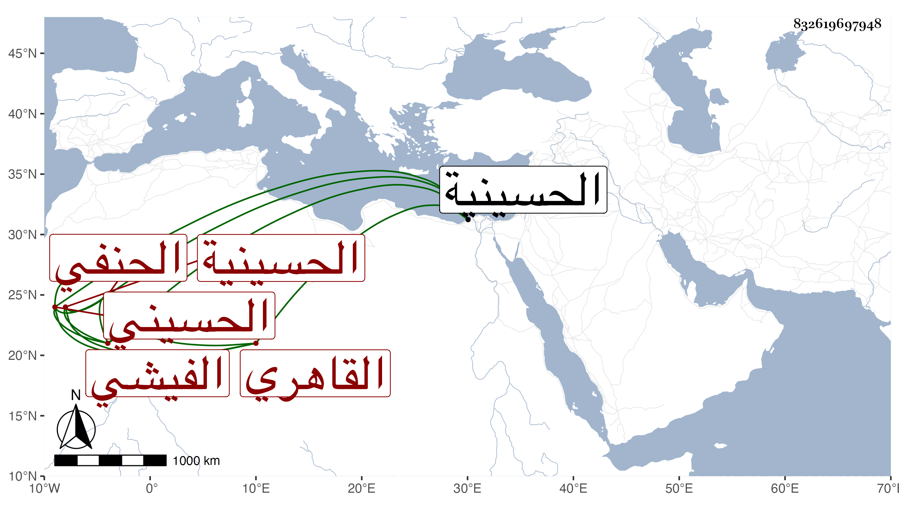

0902Sakhawi.DawLamic.ITO20230111-ara1.EIS1600.832619697948
Biography ID: 832619697948
574
حسين بن علي بن عبد الله بن سيف البدر الفيشي الأصل القاهري الحسيني سكنا الحنفي ويعرف بابن فيشا . ولد سنة ثلاثين وثمانمائة تقريبا بالحسينية ، ونشأ فحفظ القرآن والعسدة في أصول الدين للنسفي والمختار والمنار وألفية النحو والحديث والتلخيص ، وأخذ عن القاضي سعد الدين الفقه وأصوله ، ولازم قبله العز عبد السلام البغدادي في المختار وشرحه والصرف والعربية والمنطق وغيرها واختص به كثيرا ولزم خدمته ، وقبله لازم الشمس الطنتدائي خطيب جامع الظاهر ونزيل البيبرسية في الميقات ونحوه وهو الذي حنفه ، وأظنه قرأ محافيظه عنده ثم الأمين الاقصرائي وقرأ عليه في أصول الفقه الكاكي شرح المنار والتلويح وفي الفقه الهداية وكذا لازم التقي الحصني في الاصلين والمعاني والبيان والكشاف والعربية والمنطق وغير ذلك مما بين سماع وقراءة وحضر دروس الكافياجي ، وكتب جملة من تصانيفه وأخذ يسيرا عن الشمني وابن الهمام وقرأ ابن المصنف على أبي القسم النويري وقال لي بعض رفقائه إنما أخذ عنه المتن ما بين قراءة وسماع غالب مختصر الشيخ لها وأذن له ابن الديري والعز والكافياجي ثم بأخرة تردد في العربية وغيرها لنظام وحضر عند الخيضري في شرح الألفية وغيرها للرغبة في الانتفاع بجاهه إن كان وسمعت من يقول ممن كان يحضر معه عنده إنه لم يكن يستشكل شيئا ولا يسأل سؤالا ويجاب عنه بل قرأ في الابتداء على جعفر السنهوري ، وفضل وتميز وناب في القضاء عن ابن الديري فمن بعده وحج وذكر بالثروة الزائدة والتكسب كأبيه بالجبن والزيت ونحو ذلك ، ثم أعرض عنه حين تزايد فساد الحسبة واقتصر على القضاء وملازمة الاشتغال حتى كان بعد الشنشي أفضل النواب ، كل ذلك مع سكون ولين وتواضع وجمود وعدم أبهة بحيث لامه بعض قضاته عليها ، وانقياد لصهر له يقال له محمد بن الرومي ممن استفيض ضرره ، ولكن لم يذكر عنه هو إلا الخير بل قيل إنه لم يكن يتعاطى على القضاء شيئا وقد استخلفه الصوفي في الطحاوي بالمؤيدية وراجعني أول الأمر في شيء من ذلك ثم تكرر مجيئه إلي وكان يتأسف لعدم الملازمة ، ولم يزل على طريقته حتى مات في شوال سنة خمس وتسعين ولم يوجد له من المخلف ما كان يدعى فيه رحمه الله وإيانا .
